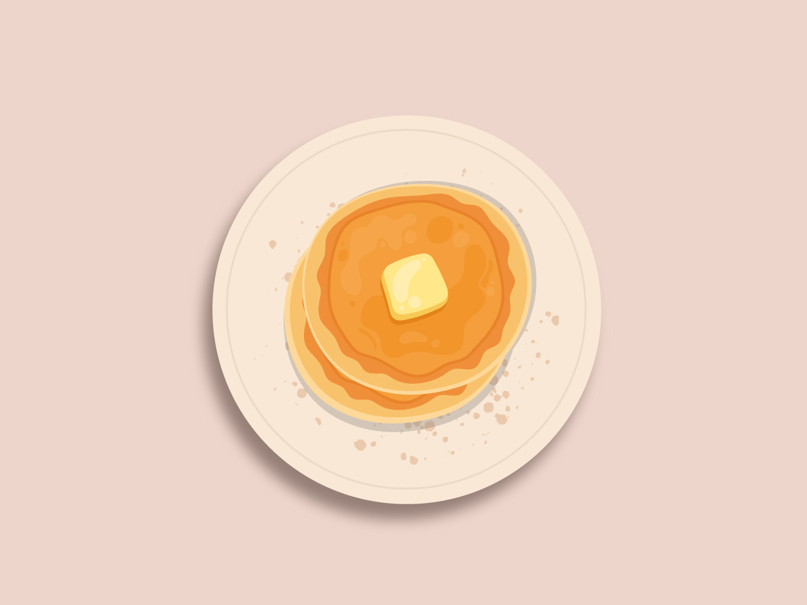

Ingredients
Method
-
In a large bowl, sift together the sugar, salt, flour, baking powder and baking soda. Give it a quick mix.
- In another bowl, melt the butter once it is melted add buttermilk and mix. To this mixture crack in the eggs one at a time and give it another mix.
- Add the wet ingredients to the dry ingredients and mix lightly until no more dry mixture is visible.
- The batter will be slightly thick and lumpy, do not overmix.
-
Heat up a frying pan on medium heat, add 1 tbsp of butter to prevent the batter from sticking. Scoop out ¼ cup of batter in the pan. Let it cook for 2-3 minutes on one side or until lots of bubbles form, then flip and cook again for 2-3 minutes.
- Stack the pancakes on a plate and serve with maple syrup, melted butter, blueberries, whipped cream, or anything that your heart desires and enjoy.
-
Enjoy!